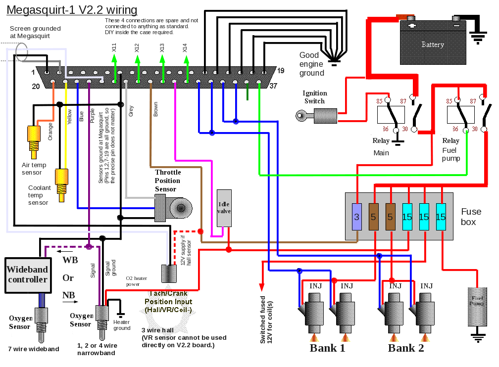

-
^^^^That's what happens when you get remaned dizzy's. We've had several people come into our dealership right after they put in a remaned dizzy and complaining about the car running like shit or not run at all. We were never able to figure out why the remaneds never worked, but when a genuine Nissan one was put in they ran like new.
Now I know what to look for next time we have a similar situation again.
edit
It's possible the remaned companies just grab parts from other dizzy's not paying attention thinking they are all the same. I would bet those parts you have pics of came from different dizzy's meant for different engine families.
1986 300ZX Turbo…sold
1990 Skyline GT-R…new money pit
2014 Juke Nismo RS 6-speed…daily -
need to find a real OEM one i think.NissanEgg wrote: ^^^^That's what happens when you get remaned dizzy's. We've had several people come into our dealership right after they put in a remaned dizzy and complaining about the car running like shit or not run at all. We were never able to figure out why the remaneds never worked, but when a genuine Nissan one was put in they ran like new.
Now I know what to look for next time we have a similar situation again.
edit
It's possible the remaned companies just grab parts from other dizzy's not paying attention thinking they are all the same. I would bet those parts you have pics of came from different dizzy's meant for different engine families.89' Turbo-R.I.P. (scrapped)
87' NA all parts swapped from 89', Stance, 3.3 long block, hx35w, Injector Dynamics 1000cc, isky cams, pathfinder intake, front mount, megasquirt v3.57 w/MS3X
07 Frontier XE <----(turd) daily -
Check maximas at the junk yards, 95% those guys never buy any parts :lol: :lol: :lol: Just make sure its the small style distributor not the huge one. -
i bought a vg30 engine tonight (86) and is the distributor is lined up on the dot, the rotor starts on cyl #5 :-? pics to come89' Turbo-R.I.P. (scrapped)
87' NA all parts swapped from 89', Stance, 3.3 long block, hx35w, Injector Dynamics 1000cc, isky cams, pathfinder intake, front mount, megasquirt v3.57 w/MS3X
07 Frontier XE <----(turd) daily -
Line on the left is were the the rotor is when shat and gear are lined up. Line on right is #1
This is off an engine (86) i just bought tonight. See #5, see the rotor. When the shaft is lined up this is were it sits.
89' Turbo-R.I.P. (scrapped)
87' NA all parts swapped from 89', Stance, 3.3 long block, hx35w, Injector Dynamics 1000cc, isky cams, pathfinder intake, front mount, megasquirt v3.57 w/MS3X
07 Frontier XE <----(turd) daily -
nice find. will keep in mind when timing my engine. -
http://www.msextra.com/doc/ms2extra/upg … l#download
Converting V2.35 by B&G firmware to newer updated firmware(v2.9 I believe). I contacted DIY and they told me they no longer have the .ini file for my "outdated" firmware. Running into a few snags though was wondering if anyone has run into this problem and if they have if they could answer a few questions for me. My first question is what is the boot jumper they talk about? Second question is how would I adjust the latency for the USB-serial adapter? -
On the distributor topic, its always been known pathfinder distributors are numbered slightly different and thus point at a different spot when timed. Ran into this issue with nater86zx's car when trying to time it like a Z31. :lol:
Good info to share none the less. 8)- VG30DET (HE341) 86 300ZX - 1982 280ZX Turbo - Headered NA 1986 300ZX 2+2 - 2000 Xterra - -
Can anyone tell me if I am heading in the right direction? -
AFR's look weird. You should be 14.7 or higher in low load areas all across the RPMs, if you want to save gas/emissions.
Also, I don't like the all-in approach to the timing at 2600. I would increase it linearly at each load level to whatever max you need.BLOZ UP.com
It is not recommended to confirm proper installation by driving into walls or other barriers as this could cause personal injury or damage to the vehicle. -
Wow, this thread really got chopped up. On the other hand, the z is alive and well. I got it running about 3 days ago and probably put 75miles on it already. It needs some tuning but cruises great.89' Turbo-R.I.P. (scrapped)
87' NA all parts swapped from 89', Stance, 3.3 long block, hx35w, Injector Dynamics 1000cc, isky cams, pathfinder intake, front mount, megasquirt v3.57 w/MS3X
07 Frontier XE <----(turd) daily -
I take back my statement about all-in. The stock ECU has it, at low loads, 40 BTDC at like 2500rpm.BLOZ UP.com
It is not recommended to confirm proper installation by driving into walls or other barriers as this could cause personal injury or damage to the vehicle. -
My first time self assembled ms1 v2.2. I already have extra code on my pc as long as all the software (not for the stim yet and haven't ran my disk for the usb comm adapter but everything else is ready to go and bug free)
I've been working at my stim. It came in last week. Was too tired to finish it last night and i've been too out of it to finish it tonight.
Are you guys comparing the vg30 to the L28 in any way shape or form when you are building a base tune or just going off stock fuel/ign map?
I have stock turbo z injectors (until i get my 3rd gen maxima manifold fixed/replaced)
KA24de throttle body and tps
9:1 compression (slightly more actually because shaved head but we'll say 9:1)
For now i'd like to slap the trigger wheel in my stock distributor and run that. I have a ka24de coil and ignitor i'm going to attempt to run for now.
60 trim? .63 ar undivided turbo i plan to start with 5-8 psi
Fuel will be 93 pump gas
Pump will be 255lb hr
I'll use heat range 7 plugs. Probably with a .028/.030" gap.
Um…what else? intercooled
3" downpipe and cat delete. 2.5" cat delete back to twin 2" blast pipes i made myself.
Wideband.
I'll see what i can turn up in the coming months. Hopefully get a smooth starting point anyway. I'm having a blast right now. Hopefully not a headgasket or ringland blast later. Lol.vg30'd s13 in progress. Shocks. Pegs. Lucky. -
Ran into my first issue. TWO versions of the db37 piniout for ms1 v2.2
Msextra and megamanual contradict the grounds.....
Megamanual
Msextra

Yeah. i was confused too. I DO have the msv3 processor. Maybe that's where the change came in. Idk. I've searched for a few days and haven't found anything helpful. Both are using pin 24 to trigger coil. The lower diagram does list the marked grounds in the upper diagram. NOob question because well, it's my first ms and i think it's highly relevant. I was thinking just use the lower diagram. If i fry something i'll be back with a "dont do that" but i'm testing with a stim and a 9v battery so how bad could it be? I could just be worrying too damn much but better safe than sorry.
I had planned on picking up a relay board, L28/vg30 dizzy wheel and the on board ignition chip. ANYTHING ELSE I NEED TO ORDER FOR THIS?! I have a honda 4 wire, two nissan 3 wires and a nissan one wire (s13 kade) 02 on hand. WOULD I NEED TO ORDER THEIRS (diyautotune/ms) SPECIFICALLY?
Also I read through this thread (every page, every post) and if i use the stock dizzy with my ms1 extra v2.2 i'll need that resistor between a 12v and the green wire, correct or is it already built into my board? I built it to megamanual specs to the LETTER with all components that came with my kit. I haven't jumpered anything but Just haven't tested squat other than my jimstim 1.5. engine comes back out for the last time hopefully this week. Mechanically i'm about ready to rock. Last mystery is making sure everything on the ecu side of things is correct.
Thanks.vg30'd s13 in progress. Shocks. Pegs. Lucky. -
Why not use the Factory Distributor/ignitor? Yes, you probably have to run the resistor in line (witch is Easy) if you dont have it it on the board. Thats no biggie. If you wire like the diagram above your good. I can only see digram number 2. Also if you join the MSextra forum tht helps alot. Another thing i advise is follow the grounding procedure that recently been setup for all megasquirts. it should be in the manual section some place.
Grounding Procedure:
http://www.msextra.com/doc/general/grounding.html89' Turbo-R.I.P. (scrapped)
87' NA all parts swapped from 89', Stance, 3.3 long block, hx35w, Injector Dynamics 1000cc, isky cams, pathfinder intake, front mount, megasquirt v3.57 w/MS3X
07 Frontier XE <----(turd) daily

Copyright © 2006–. All rights reserved. Privacy Policy